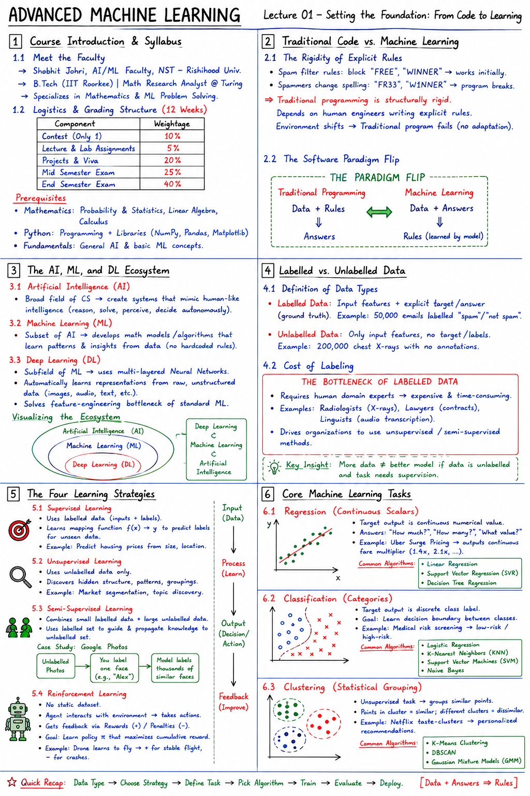

Short Notes & Visual Summary
Handwritten / quick summary notes for Lecture 01:

Click image to open high-resolution version in new tab
Course Introduction & Syllabus
1.1 Meet the Faculty
The Advanced Machine Learning course (CSA 333) is taught by Shobhit Johri, AI/ML Faculty at Newton School of Technology - Rishihood University. He holds a B.Tech from IIT Roorkee, worked as a Mathematics Research Analyst @ Turing, and specializes in mathematics and machine learning problem solving.
1.2 Logistics and Grading Structure
The course spans 12 weeks, covering foundational ML lifecycle models up to bagging, boosting, clustering, and neural configurations. Key evaluation criteria include:
- Contest (Only 1): 10%
- Lecture & Lab Assignments: 5%
- Projects & Viva: 20%
- Mid Semester Exam: 25%
- End Semester Exam: 40%
- Mathematics: Solid grasp of Probability & Statistics, Linear Algebra, and Calculus.
- Python: Proficiency with programming and libraries (NumPy, Pandas, Matplotlib).
- Fundamentals: General AI and basic ML concepts.
Traditional Code vs. Machine Learning
2.1 The Rigidity of Explicit Rules
Imagine being asked to write a spam filter in Python. You write rules to block words like "FREE" or "WINNER". It works initially, until spammers change their spelling to "FR33" or "W1NNER". Your program breaks, requiring manual rule patches.
Traditional programming is structurally rigid. It depends on human engineers explicitly writing logic rules. The moment the environment shifts, a traditional program fails because it cannot adapt dynamically.
2.2 The Software Paradigm Flip
Machine Learning flips this software engineering structure on its head. Instead of writing rules, we feed data and answers to the computer, allowing the algorithm to discover the underlying logic:
- Traditional Programming: Data + Rules ⇒ Answers
- Machine Learning: Data + Answers ⇒ Rules
The AI, ML, and DL Ecosystem
3.1 Artificial Intelligence (AI)
Artificial Intelligence is the broad, overarching field of computer science dedicated to creating hardware and software systems capable of mimicking human-like intelligence. The goal is to design systems that reason, solve problems, perceive environments, and make autonomous decisions without hardcoded logic.
3.2 Machine Learning (ML)
Machine Learning is a specialized subset of AI focused on developing mathematical models and algorithms. It allows computers to autonomously extract patterns and learn insights directly from data, rather than relying on explicit, hardcoded instructions.
3.3 Deep Learning (DL)
Deep Learning is a highly specialized subfield of ML that utilizes multi-layered Artificial Neural Networks to automatically discover, extract, and optimize representations directly from raw, unstructured data (like images or raw audio waveforms). It solves the feature-engineering bottleneck of standard ML, where humans had to manually highlight edges or shapes before feeding data to the algorithm.
Deep Learning ⊂ Machine Learning ⊂ Artificial Intelligence
Labelled vs. Unlabelled Data
4.1 Definition of Data Types
Before training a model, we must recognize the format of the data we feed it, as it dictates the entire learning strategy:
- Labelled Data: Consists of a set of input features coupled directly with the explicit target outcome or correct answer (the ground truth). Example: 50,000 emails explicitly marked as "spam" or "not spam".
- Unlabelled Data: Raw data that contains only the input features, with absolutely no accompanying target tags, categories, or outcomes. Example: 200,000 chest X-rays with no annotations.
4.2 Cost of Labeling
Labelled data is highly expensive and slow to produce because it requires human domain experts (e.g. radiologists to annotate X-rays, lawyers to tag contracts, or linguists to transcribe audio). This bottleneck drives many organizations to seek unsupervised or semi-supervised methods.
The Four Learning Strategies
5.1 Supervised Learning
The model learns using **labelled data**. The system is provided with both the questions (inputs) and the explicit correct answers (labels). The objective is to learn a mapping function that can accurately predict the label for new, unseen inputs (e.g., predicting housing market prices based on square footage and location).
5.2 Unsupervised Learning
The model is fed completely **unlabelled data**. With no teacher or scoring key, the algorithm acts as a detector, uncovering hidden structures, natural groupings, and statistical similarities in the data (e.g., market segmentation discovering consumer archetypes from purchase histories).
5.3 Semi-Supervised Learning
A practical hybrid designed to bypass high labeling costs. It combines a small pool of labelled data with a massive pool of unlabelled data. The model uses the small labelled dataset to anchor its understanding, then propagates that knowledge across the vast unlabelled dataset.
When you open your photos app, it groups similar faces together automatically (unsupervised clustering). Once you supply a single label (e.g., "This is Alex"), it propagates that label to thousands of other photos containing the same face (supervised labeling).
5.4 Reinforcement Learning
Unlike the other strategies, Reinforcement Learning does not rely on static datasets. An autonomous agent interacts dynamically with an unknown environment. The agent takes actions, experiences consequences, and receives feedback via **rewards** (positive outcomes) or **penalties** (mistakes) to optimize its policy (e.g., training a drone to fly through windy warehouses by penalizing crashes and rewarding stable flights).
Core Machine Learning Tasks
6.1 Regression (Continuous Scalars)
Regression is a supervised learning task where the target output variable is completely continuous and numerical. It answers questions like: "How much?", "How many?", or "What value?".
- Real-world Example: Uber Surge Pricing. Uber analyzes demand metrics, driver distributions, and weather constraints to dynamically output a continuous fare multiplier (e.g., 1.4x, 2.1x).
- Common Algorithms: Linear Regression, Support Vector Regression (SVR), Decision Tree Regression.
6.2 Classification (Categories)
Classification is a supervised task where the target output is a discrete, predefined category or class label. The goal is to draw clear decision boundaries in the data space to separate classes.
- Real-world Example: Medical Risk Screening. Emergency departments use classification models to evaluate symptoms and vitals, categorizing patients into low-risk or high-risk brackets.
- Common Algorithms: Logistic Regression, K-Nearest Neighbors (KNN), Support Vector Machines (SVM), Naive Bayes.
6.3 Clustering (Statistical Grouping)
Clustering is an unsupervised task where the algorithm groups data points based on natural statistical distributions, dense regions, and geometric proximity. Points inside a cluster are highly similar, while highly distinct from points in other clusters.
- Real-world Example: Netflix Taste-Clusters. Netflix clusters users based watching histories to uncover highly specific taste groups, driving personalized homepage recommendations.
- Common Algorithms: K-Means Clustering, DBSCAN, Gaussian Mixture Models (GMM).
Original PDF Notes
Below is the original PDF document for your reference: